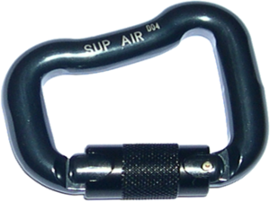
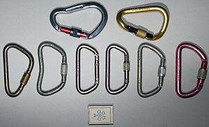

Карабин
Караби́н — быстродействующее соединительное звено между двумя предметами, имеющими петли. Карабин имеет форму скобы с пружинной защёлкой.

История
Первоначально «карабинчиком» или «карабином» назывался крюк с защёлкой, при помощи которого подвешивали оружие-карабин к перевязи-бандольеру, после чего схватка продолжалась пистолетами или холодным оружием.
Близкое к карабину устройство упоминается уже в 1616 году в книге «Kriegskunst zu Pferdt» (Военное искусство на лошади) военного писателя Валльхаузена (Johann Jakob von Wallhausen).
Первое подробное описание можно найти в «Экономической энциклопедии» 1785 г.
В США 7 апреля 1868 г. был запатентован простой карабин для соединения цепей.
Другой патент на изобретение карабина был получен в 1906 году.
Применение
Карабин — основное соединительное устройство в скалолазании, альпинизме, промышленном альпинизме, спелеологии, дельтапланеризме, парашютном спорте, роупджампинге и многих других смежных видах деятельности. Применяется для страховок, самостраховок, в качестве блоков, для соединения верёвок со скальными крюками и др.
Также в силу своей универсальности используется (в различных вариантах) в рюкзаках, ранцах, сумках, креплениях для связки ключей и т. д.
Виды карабинов
- Муфтованные (защелкивающие) и немуфтованные карабины
Муфтованные карабины оснащены специальной муфтой, не дающей им самопроизвольно открываться. Муфты бывают резьбовые, байонетные и пружинные (автоматические), последние более удобны для работы одной рукой, но могут отказать на морозе.
- Карабины с «зубом» и с замком «Key Lock» (и его аналогами)
Сейчас многие карабины изготавливаются с системой Key-Lock (встречаются и другие названия, но суть одна). Это означает, что в месте, где при закрытии карабина примыкает защелка, на теле карабина отсутствует так называемый «зуб». Такие карабины удобнее, так как не цепляются «зубом» за крючья, тросики закладок, верёвку.
- Карабины Maillon rapide
В тех случаях, когда предполагается нагрузка на карабин, по направлению не совпадающая с его длинной стороной или нагрузки, направленные более чем в две стороны (подробнее см. ниже), применяются специальные карабины «Maillon rapide» (рапиды). Отличительной чертой этих карабинов является отсутствие откидной защёлки, которая заменена усиленной резьбовой муфтой, и изготовление из стального прутка. Чаще всего используются рапиды овальной формы № 7 и 8 (номер обозначает диаметр прутка в мм). В спелеологии применяются также рапиды полукруглой и дельтовидной формы с диаметром прутка 10 мм, где они выступают как центральное звено подвесной системы, к которому присоединяется остальное снаряжение. Значительно реже используются рапиды прямоугольной формы (для соединения плоских лент) и в виде скрученного овала.
Форма карабинов

- Трапециевидные карабины
При равной прочности с овальными карабинами имеют меньший вес, так как оваласновная нагрузка передается через более прочную спинку карабина.
- Асимметричные D-образные карабины и треугольные карабины
Похожи на трапециевидные карабины, отличаются тем, что имеют больший зазор для верёвки и в них удобнее вязать узлы (например узел UIAA), и в них проще защёлкиваться.
- Грушевидные карабины/Карабины HMS
Похожи на асимметричные D-образные карабины, более крупные и их легче защёлкивать на верёвках. Часто в названии карабина можно встретить аббревиатуру HMS — это говорит о том, что данный карабин имеет грушевидную форму и удобен для работы со спусковыми устройствами и узлом UIAA. Ряд таких карабинов выпускались в изогнутом (3D) варианте (на иллюстрации) для более удобной работы с двойной верёвкой.
- Карабины с изогнутой защелкой
Отличаются от D-образных карабинов только тем, что имеют изогнутую внутрь защёлку, что облегчает прощёлкивание верёвки.
Использование карабинов и уход за ними
Согласно рекомендациям UIAA, минимальная нагрузка, которую должен выдерживать альпинистский карабин без разрушения должна быть больше 20 кН по продольной оси и 4 кН поперечно. Предельная статическая нагрузка на альпинистский карабин составляет от 20 до 30 кН, что больше обычно встречающейся при нормальном использовании (более точная информация указывается на прутке карабина или в паспорте).
Основные правила использования карабинов
- Обращайтесь с карабинами аккуратно.
- Нагружаться должна «длинная» сторона карабина, при этом точек приложения нагрузки может быть только две, предельная статическая нагрузка на эту ось составляет от 20 до 30 кН. Если нагружать «короткую» сторону, карабин легко сломать. Как правило, предельная нагрузка в направлении этой оси составляет от 6 до 10 кН.
- Не нагружайте открытые карабины. Если карабин открыт, то предельная нагрузка составляет от 6 до 10 кН, то есть 2—4 раза меньше нормальной.
- Карабин должен быть правильно расположен. То есть, посторонние предметы не должны касаться карабина, так как в этом случае он начинает работать на излом, что снижает его нагрузочные способности.
- При работе с верёвочными карабинами будьте бдительны! Карабин может открыться сам при ударе (в том числе защелкой) о посторонние предметы, и/или при вибрации, вызванной протравливанием верёвки.
- Иногда верёвка может сама выщёлкнуться из карабина без муфты. Поэтому надо быть очень внимательным при работе с карабинами и оттяжками. Верёвка должна вщёлкиваться в карабин так, чтобы она шла снизу вверх и не образовывала узлов. Верёвка не должна прижимать муфту карабина, так как это может привести к выщёлкиванию верёвки из карабина. Основной критерий правильного вщёлкивания верёвки в промежуточную точку страховки тот, что при движении через него верёвка должна приподнимать карабин, а не прижимать его к скале или другому рельефу.
- Карабин с резьбовой муфтой надо защёлкивать так, чтоб верёвка при движении вверх не развинчивала муфту.
См. также
Карабин(страница на Вики)